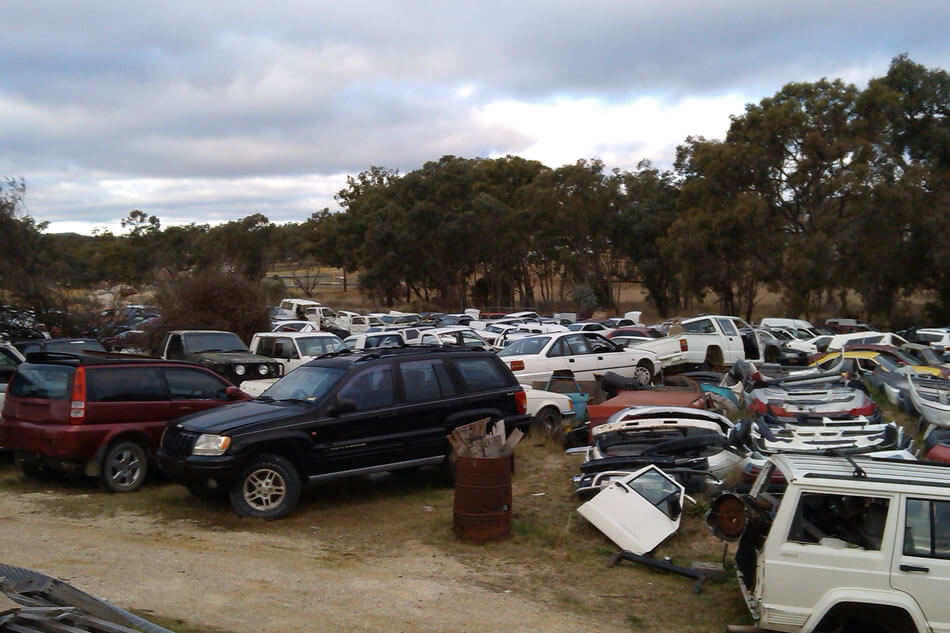

Would certainly you such as to have your auto-remove and also obtain good cash for it? Then you are precisely in the appropriate place! Old cars can rapidly become a pricey catch because cars and trucks getting old in years use more fuel. Repair work will certainly additionally come to be a lot more numerous as well as frequent in time. With us, you can dispose of your automobile promptly; we grab your car and afterward take over all further steps to reuse your automobile. Our full service is free for you!
You will get top dollar for all your old and also unwanted automobiles, rise to $9999 no matter the condition they're in. So if you have an old all-wheel drive, front-wheel drive, rear-wheel drive, symmetrical four-wheel drive, plug-in hybrid, crossbreed auto, classic car, vintage car, hybrid electrical automobile as well as an electrical auto, call our scrap auto getting solution today to obtain a free pickup solution from us or drop it off to our trashing lawn for more cash!
Are you looking for a lorry removal near you? Look no more. We have actually already gotten thousands of scrap, junk, utilized, old, trash cars between Joondalup, Malaga, Midland, Redcliffe, Morley, Ellenbrook, Forrestfield, Fremantle, Mandurah, Maddington, Wangara, and Rockingham promptly, efficiently, and conveniently for our consumers and dealt with tasks such as cars and truck recycling and also proof of destruction. You do not need to bother with anything anymore - just let us remove your automobile currently !!
Free elimination of all kinds of vehicles! Whether you have a Kei car, Sports car, Family auto, Euro Auto, Asian Cars, Euro Asian Cars, and American Automobiles, we will certainly remove them.

The brand name does not matter. Our cars and truck acquiring solution will buy and get rid of all cars and truck designs and brands, a popular brand name like Hyundai, BMW, Mercedes, Holden, or Toyota.
Whether you have an old vehicle that is no longer worth fixing, your lorry title did not pass from the Division of Transport, or you had an accident: Your garbage auto can still be worth something! With our scrap car purchasing service, you might rise to $9999 in cash, as well as if you bring your vehicle to our junk backyard, we will pay you more! We even pick up your lorry cost-free to 50 km from Perth. You can either have your old car got by a licensed vehicle and truck reusing company like our firm or bring it to our scrap lawn yourself.
As a vendor, you will undoubtedly receive a specific quantity, depending on the vehicle design, condition, and estimated recycling options. A certificate disposal form will undoubtedly be released to you instantly. You will certainly require this and the lorry registration document and license plates to deregister the car at the registration office appropriately.
Don't offer your utilized auto at an auto dealer or auction for less money. Call us initially, you never recognize you may get more cash from us, plus you do not need to pay any car selling costs service.
Please create an e-mail or give us a call so we can visit. Marketing your old car is just a couple of actions:
We will call you and also make an appointment with you. You will also find out promptly just how much cash we will pay you for your junk vehicle.
You bring your lorry over to us or have it grabbed by us if you wish. You'll obtain instant money. Please make sure you have a photo ID on you.
Because we get the automobile from you, you don't require to bother with the disposal paper. There's nothing more to do - we'll look after the rest.
Utilize our questions kind or call us straight. For us, adhering to questions are necessary for cars and truck disposal:
What type of automobile should be ditched (make and also type)?
What condition is the lorry (ready to drive, prepared to roll, or does it have to get on the trailer)?
Where should the car begotten?
With this information, we can schedule an appointment and analyze whether we can buy your scrap cars and truck and pay you a sensible amount of cash in return.
If your old auto can no longer be sold as a utilized cars and truck, the way to professional lorry wrecking is worthwhile in two respects. They are your pocketbook and also the environment!
Cars and truck disposal is basically about dealing with an automobile in an eco-friendly method and recouping basic materials that are constructed right into them.
This includes, for instance:
There are three good reasons that it is worthwhile for you to have your old vehicle reused and scrapped.
Avoid criminal offense, have autos reused.
For one thing, if you park a damaged vehicle on the side of the roadway, you are devoting a criminal activity. This is unlawful disposal, which can be punished with a significant fine of approximately $50,000. In the worst case, there is even a prison sentence.
Therefore, the last vehicle owner always needs to send a disposal certification to the registration workplace. You can only get this from a qualified recycling business or a salvage lawn.
If there is no evidence of correct disposal at the auto scrap yard, you are believed to have illegally dealt with the old cars and truck (on the roadside, in public places) or kept it (e.g., in private garages).
Automobiles consist of not only many recyclable materials yet also eco unsafe materials. Most importantly:
These materials create significant damages when they enter the atmosphere. Therefore, end-of-life automobiles are classified as hazardous waste. To stop ecological damages, unlawful cars and truck disposal is a criminal offense.
Saving sources with automobile recycling is just as important. Prized possession resources such as steel, glass, and also plastic can be recycled in high quality and went back to the raw material cycle.
Almost every old lorry still has a recurring value: these are the parts that are suitable for reuse and also hence have a market value. The lorry recycling department will undoubtedly spend on this regular worth.